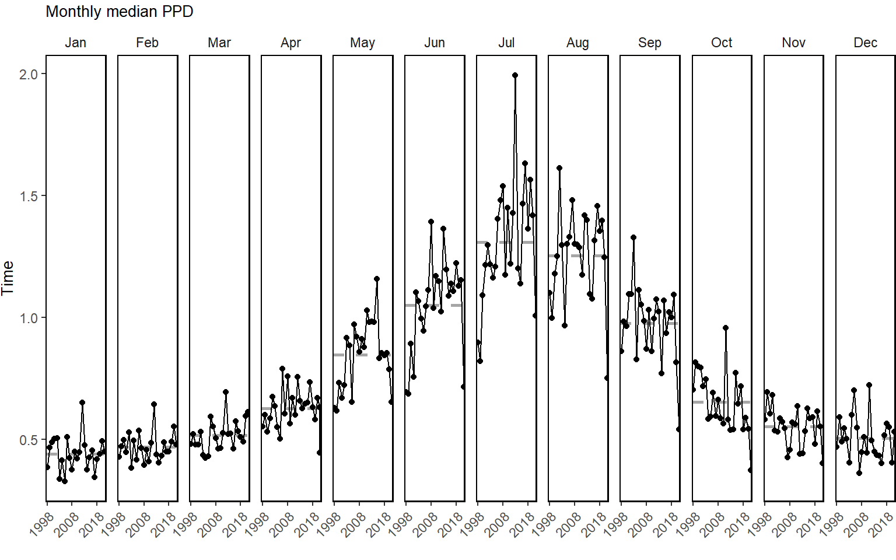
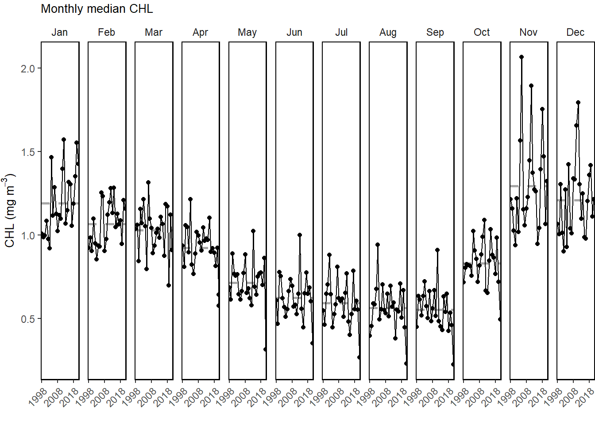
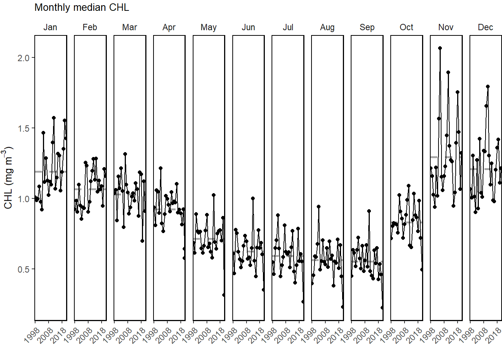
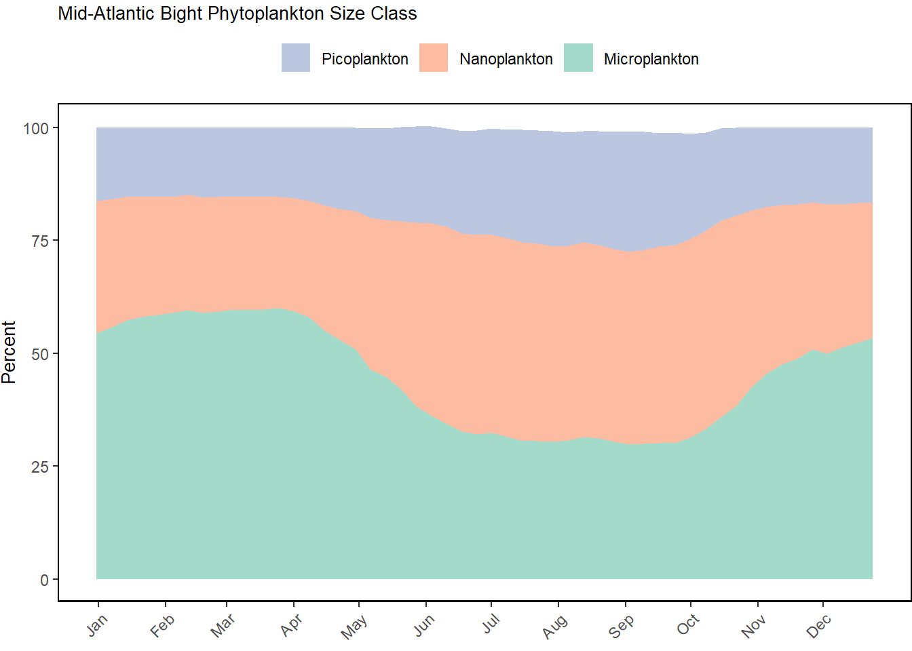
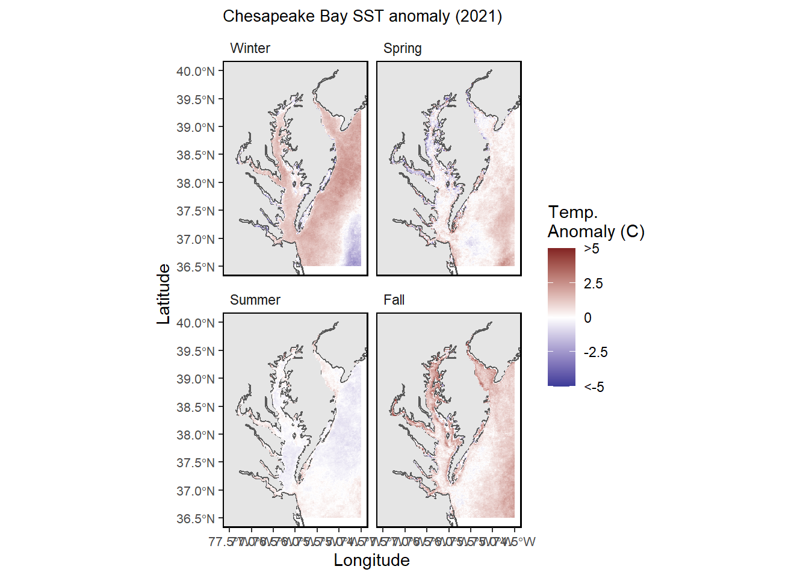
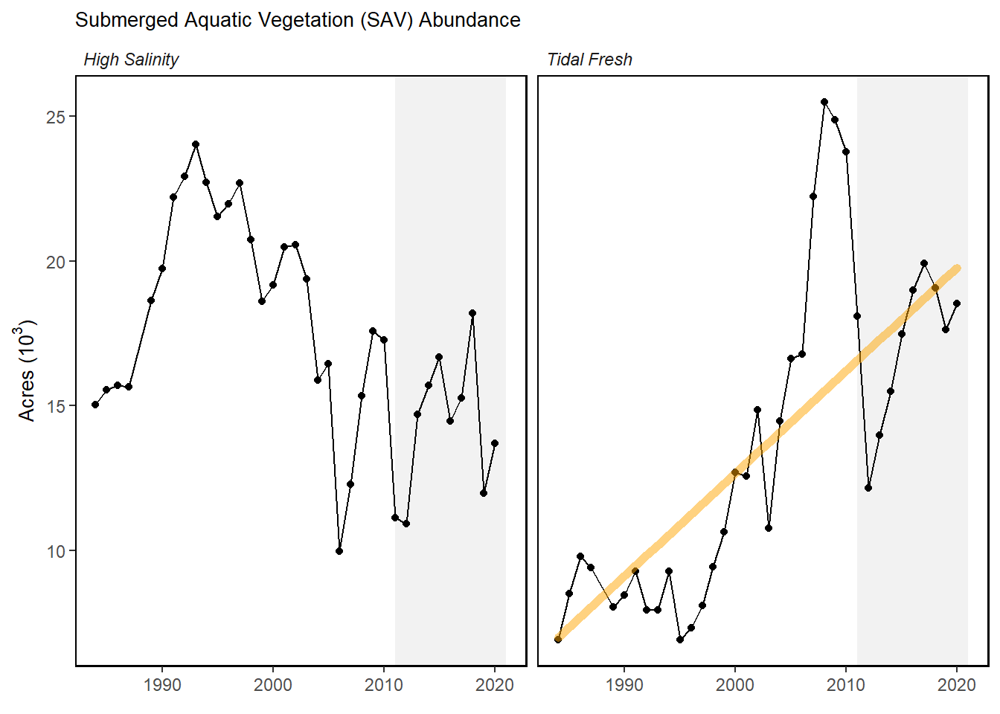

Primary production

Monthly primary production trends show the annual cycle (i.e. the peak during the summer months) and the changes over time for each month.

Trend lines are shown when slope is significantly different from 0 at the p < 0.05 level. An orange line signifies an overall positive trend, and purple signifies a negative trend. Note that in the final report we will only test for trend when N >= 30. However, I have relaxed that requirement for the purposes of this document so that trends are highlighted when N >= 20. This means that some trends shown here will not be present in the final document. Dashed lines represent mean values of time series unless the indicator is an anomaly, in which case the dashed line is equal to 0. Shaded regions indicate the past ten years. If there are no new data for 2018, the shaded region will still cover this time period.
MAB seasonal sea surface temperature time series overlaid onto 2021 seasonal spatial anomalies.
Annual bottom temperature in the Mid-Atlantic Bight. (black = Paula’s, red = GLORYS)
Monthly primary production trends show the annual cycle (i.e. the peak during the summer months) and the changes over time for each month.

Weekly chlorophyll concentrations and primary productivity in the Mid-Atlantic are shown for by the colored line for 2021. The long-term mean is shown in black and shading indicates +/- 1 sample SD.

Water quality attainment in Chesapeake Bay following rolling three year assessment periods.
Red = 2021, blue = Long term avergae 2010-2020.
Red = 2021, blue = Long term avergae 2010-2020.


NO NEW DATA
Stratified abundance of cnidarians and euphausiids in Mid-Atlantic Bight.
NO NEW DATA
Large (red) and small-bodied (blue) copepod abundance in the Mid-Atlantic Bight.
NO NEW DATA
Large (red) and small-bodied (blue) copepod abundance in the Mid-Atlantic Bight.
NO NEW DATA
Zooplankton diversity in the Mid-Atlantic Bight.
NO NEW DATA
Marine heatwave events (red) in the Mid-Atlantic occuring in 2020.
Marine heatwave cumulative intesity (left) and maximum intensity (right) in the Mid-Atlantic Bight.
Marine heatwave cumulative intesity (left) and maximum intensity (right) in the Mid-Atlantic Bight.
Report text here for MA and NE reports

Bottom pH (summer only: June-August) on the U.S. Northeast Shelf plotted from available quality-controlled vessel- and glider-based datasets from 2007-present. Right panel: Summer 2021 glider-based pH observations on the Mid-Atlantic Bight shelf. North track glider mission (data provider: Charles Flagg, Stony Brook University) ran from 07/20/2021 to 08/20/2021. South track glider mission (data provider: Grace Saba, Rutgers University) ran from 07/16/2021 to 08/20/2021.
Seasonal sea surface temperature anomalies for 2021 over the Northeast US Shelf.
Average annual sea surface temperature (SST) over the Northeast US Shelf.
Index representing the north wall of the Gulf Stream. Positive values represent a more northerly Gulf Stream position.
Index representing the north wall of the Gulf Stream. Positive values represent a more northerly Gulf Stream position.
Warm core ring formation on the Northeast US Shelf.